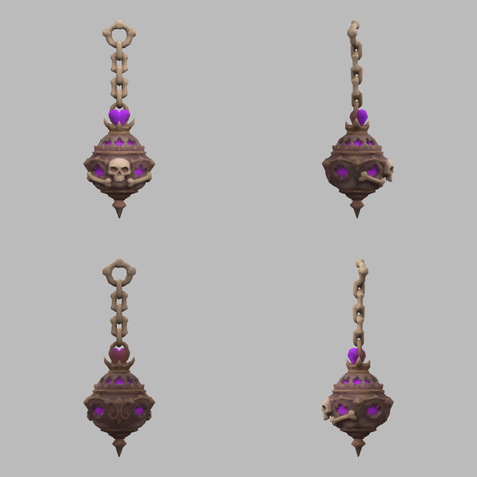

The mender of the Hollow Heart: your export of the bone censer, hung on its chain with a skeleton and nine moves added by hand. It swings from the chain's top, trails behind as it drifts, and on its gather the coals flare and the chain swings wild before it mends its kin. Its swing, its gather and its spill use the game's numbers frame for frame. Pick a move, drag to turn it, and judge it. Nothing in the game has changed.
Hover or Drift sets what it does between gathers, and Going turns it on the spot. Gather and mend and Spill play over it and repeat until you press them again. Hurt plays on top of anything. Death drops it: press it again and it spawns back. The bar names the part of the move that is playing, in the game's own words.

It came through whole, as one piece: a ring and a chain of bone links, a violet heart on a spiked crown, the pot with violet coal windows, a skull and crossbones on its front, and a spike below. Each chain link rides one bone so a link never bends.
| Move | What it does | Timing |
|---|---|---|
| Hover | The game's rest: it swings slowly from the chain's top on two axes, the links trailing the swing a little, and bobs; the pot spins slowly and the coals breathe. | Game: 0.12 rad at 2.2 rad/s, the cross swing smaller and slower; the bob 0.06 u at 1.8 rad/s; the spin 0.5 rad/s. 11.5 s loop. |
| Drift | The pot trails behind the travel on top of its swing. | Game: 2.0 u/s, trailing 0.28 rad. 5.8 s loop. |
| Turn left, turn right | The pot swings out from the turn. | 180° a second (my number: the game turns it instantly). |
| Gather and mend | The game's gather key for key: through the coil the coals flare, the halo widens and brightens, the pot spins up and rises a touch, narrow and tall, and the chain swings wild and fast while a rose ring closes in from the mend's reach. On the mend the pot dips and squashes wide, held 3 frames, a rose pulse runs out 4.2 u and the kin in reach light up; the snap: the halo blinks dark; then it settles back. | Game: coil 48 ticks less the 2.5-frame strike, hold 3 frames, snap 3, settle 10, rest 0.35 s. 1.7 s in all. |
| Spill | A stun 0.4 s into the gather: the coals gutter, the pot drops and swings hard, crystal bits fall, and it eases back. | Game: 4 frames to the spill, 0.45 s back. |
| Hurt | The pot kicks back and squashes, the chain whips after it. Plays on top of any move. | 0.5 s |
| Spawn | Grows in hanging from the chain's top, then starts to swing. | Game: grow in 7 frames, about 10% over, from the chain's top. |
| Death | Struck, it swings hard and the coals die; the chain lets go and it drops, the spike strikes the floor, the pot topples onto its side and the chain falls over after it. | Mine: the drop 0.42 s (a free fall from its height), the topple 0.5 s. The game swells it and throws it. |
| What was measured, on every frame of every move | Result |
|---|---|
| Loops that jump when they restart (hover, drift, both turns) | 0 |
| Lowest point while it hangs | 0.82 u above the floor, the spike at the end of a swing. |
| Lying dead | On the floor, not in it: the fall and the topple are kept on the floor frame by frame (1 mm at worst). |
| The pot's spin | The page adds it as the game does, at the game's rate for each moment of each move, so the moves never jump from one spin to another. |
These numbers come from the model file. I checked the poses as still frames only: the cloud machine cannot play the page at full speed, so the swing, the gather and the fall are yours to judge.